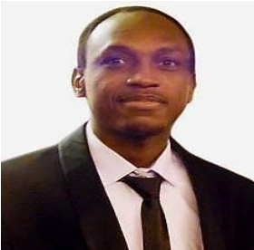

Mahamadou ALI
Age : 28 ans
Permis de conduire B
Mobilité France et Etrangé
Coordonnées
Residence Puvis de Chavannes
29 rue Marguerite 69100 Villeubanne
Email : mahamadou.ali@gmail.com
Téléphone : 0033 7 80 79 81 43
Langages de programmation
Langage C
Langage Java
Langage SQL
Langage Shell
Logiciels
Aspen
CATIA
Matlab
Proengineer
Turbo Pascal
Langues
Anglais
Francais
Outils de gestion
Cegid
Protel
Vega
Ingénieur process avec les Compétences complémentaires en informatique
COMPETENCES
En informatique
Langages de programmation (Shell, C, Java)
Systèmes d'exploitation (Unix (MacOS X, GNU/Linux Debian, Ubuntu))
Modélisation Géométrique, CFAO, prototypage rapide (CATIA, Proengineer)
ERP (SAP)
Systèmes d'information (Merise, UML)
Base de données (Oracle/SQL)
En Process
Modélisation et simulation des procédés : MATLAB
Ingénierie des procédés : PFD/PID sous ASPEN
Gestion des risques : Risques chimiques et espace confiné, Risques biologiques, Incendie et explosion
FORMATIONS
| 2018-2019 |
Master 2, Compétences complémentaires en informatique
Université Claude Bernard Lyon 1 Villeurbanne | France |
| 2017 - 2018 |
Master 2, Génie des procédés et des bioprocédés : Génie des procédés physicochimiques
Université Claude Bernard Lyon 1 Villeurbanne | France |
| 2013 - 2015 |
Master 2, Génie des procédés et des matériaux : Génie chimique
Université 08 Mai 1945 de Guelma | Algérie |
|
| 2010 - 2013 |
Licence en Hygiène, sécurité et environnement
Institut du génie de l'environnement et d'informatique Annaba | Algérie |
EXPERIENCES PROFESSIONNELLES
| Février 2018 - Aout 2018 |
Stage – LANSPEX « Laboratoire National de Santé Public et d’Expertise » (6 mois)
Suivi et évaluation de l’impact environnemental des rejets d’effluents industriels sur le fleuve Niger;
cas de la plateforme Gamkalé | Niamey
Poste : Stagiaire ingénieur procédés physicochimique et laboratoire
|
| Avril 2015 - Aout 2015 |
Stage – FERTIAL « Société des Fertilisants d’Algérie » (5 mois)
Etude de dimensionnement d’un échangeur de chaleur à plaque en vue de la réduction des émissions des NOx
Poste : Stagiaire ingénieur process
|
| Mars 2013 - Mai 2013 |
Stage – LAIGM « Laboratoire d’Analyse Industrielle et de Génie des Matériaux » (3 mois)
Devenir des boues industrielles
Poste : Stagiaire technicien laboratoire
|